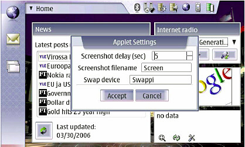
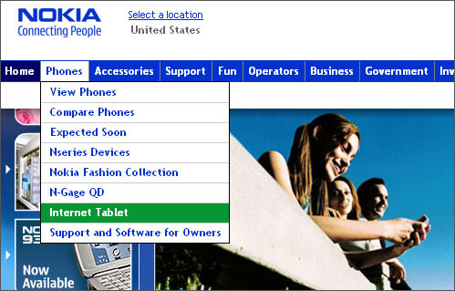

Author Archive for RogerS
Note: Links may not work or may take you to an archived page at the Internet Archive.
By RogerS May 24th, 2006
Categories: Internet tablet, Nokia 770, OS and video

Ari Jaaksi’s post in his blog got me to read his Linux World presentation, where I saw an interesting statement on slide 14 about how Armin Warda had added swap to Jakub Pavelek’s applet
for controlling memory and taking screenshots. And that “What this is
for Nokia [is] something we could productize. However we must ensure
that it will not break hardware, and that it is easy to use, etc.”
And next to the screen capture shown here was also a capture of the X Terminal app.
Am I reading this right to say that Nokia is definitely including swap (and screen capture and X Terminal) in the OS 2006?
* * *
Well that made me want to go and read the roadmap at maemo.org that Ari mentioned.
I’m sure I’ve seen/heard of this before, but it looks very different
than I seem to recall. I can’t say whether I saw an earlier version or
have a bad memory. 
(And the one at maemo.org is dated today. Is it really from today,
or is that just an artifact of the way maemo.org presents things?)
Anway, the roadmap says the Farsight audio/video
conferencing framework will be included, as well as support for python
development within the Maemo SDK. We’ve heard that real package
management will be included, but I hadn’t realized that every
Application Installer app that works in the current version will break
and in fact that every third-party app will have to be recompiled
because of the “new EABI toolchain.” (OK, I don’t know what that is,
but then I’m a user, not a developer.) I hope this means that OS 2006
will be available to the developers in advance of our user release.
So what have we got?
- Video conferencing. OK, cool.
- Python — faster development of brand new 770 specific apps, yes?
- apt/dpkg — more and greater automation in bringing apps to the 770, yes?
- gtkhmtl — support for html within apps? Especially those new ones I’m theorizing about?
There’s more.
The roadmap also includes such enticing items in the “To-do List for
future unannounced releases” as x86 multimedia development support and
support for full x86 device virtualization. That sounds so tremendously
wonderful I have to stop myself and acknowledge I don’t really know
what it portends. But it’s got to be good news! I think. As
does the last item on the page: “Enable other languages beside C for
writing UI applications (Python, Java, C++ binding for Hildon widget
set).” I really think that one essential for the growth of the Internet
Tablet platform is that it becomes a great place to develop new apps
and that consequently other companies use Hildon or something derived
from it for their own tablets.
By RogerS May 24th, 2006
Categories: Internet tablet, Nokia 770 and e-books
Bill McCloy works at Adobe and writes in his blog about this headline and first paragraph of a Wall Street Journal article:
Gadget Makers Offer Features to Improve ‘Readability’;
‘The Da Vinci Code’ on a Treo
Chris Kwak, a 31-year-old financial analyst, spends hours a day glued
to the tiny screen of his Palm Treo hand-held computer. He fires off
emails, check stock prices — and recently plowed through the novel ‘The
Da Vinci Code’.
So here we have reading an eBook matter-of-factly included,
along with emailing and information retrieval, as a basic user behavior
(!). While this surely doesn’t track to typical current usage, it’s yet
another signal that eReading is, directionally, becoming a mainstream
activity.
So this is more evidence accruing that e-reading is mainstream.
Shouldn’t Nokia consider e-books as central an activity on the Nokia
770 as, say, Mahjong? The next release should include FBReader as part
of the base system, I think.
The previous post in this blog, Let’s re-evaluate the 770’s chances in the market, was
written and posted to the itT forums by cobalt
and promoted later to the users blog to give it wider exposure. I
wanted to make note of that, because Planet Maemo didn’t pick up the
line about the different author.
Hopefully many other it Forum contributors will make posts that are also posted to the blog.
By RogerS May 19th, 2006
Categories: Internet tablet, Nokia 770 and software
I
like using Google’s gmail and I usually email files from my Nokia 770
to my main computer rather than connect the two devices directly. Don’t
know why, just seems easier.
But emailing files the other direction is a real problem in Opera.
If the attachment is a text or html file, Opera wants to open it rather
than save it when I click on the “download” link.
I hope that the collaboration between Nokia and Google leads to
Google slightly redesigning its pages for the 800×480 screen and to
making “download” a button rather than a link.
By RogerS May 18th, 2006
Categories: Google Talk, IM, Internet tablet, Nokia 770, OS, e-books, games and software
We
know now that the 2006 OS will come with at least one new application
pre-installed — Google Talk, with its instant messaging and VoIP phone
capabilities.
Since Nokia has been promising IM and VoIP by mid-2006 for 51 weeks
(hey! one more week till the announcement anniversary!), we knew this
was coming.
I wonder if there will be any other pre-installed applications?
Maybe FBReader, the world-class e-reader, for instance. We know that
the 770 is an ideal e-book reader and that e-books are becoming more
significant.
Or maybe there will be some additional games — Nako, Battlegweled
and IceBreaker seem obvious candidates. Maybe a sturdy text editor to
supplement Notes. Or built-in XTerm and CPU/MEM load graph. I would add
PIM apps to this list, if there were any such available. I’m not
envisioning the Nokia developers creating new apps with so much already
on their plate.
I’ve definitely made my opinion known that FBReader is a natural
application for the Nokia 770. But maybe not everyone agrees.
RemoteUser (aka Gene Mosher) believes in the 770 as a remote control
device. A whole crowd is making it a mapping/GPS displaying device. Not
to mention others developing its audio and video playing side.
If Nokia isn’t going to pre-install all of these apps, and is wary
of picking only one or another of them, I hope Ari Jaaksi and his crew
provide a good clean automatic way to install and update them that even
a rank beginner will be able to follow, as they’ve hinted will happen.
If there are “click to install” links to add some of these apps, that
will be the next thing to “pre-installed.”
By RogerS May 18th, 2006
Categories: Internet tablet and Nokia 770
In
the hoohaw about the Google/Nokia collaboration, I ran across a
peripheral mention to a discussion area dedicated to the Nokia 770 at
LinuxDevices.com. Poking further, I learned that this was created back
in February, so this is old news, I guess.
While I find the Internet Tablet Talk forums so active I can’t
follow everything, it’s good to know that other venues have sprung up
to discuss our favorite walkaround-web device. It reminds me of
different areas in New York where competitors are all located together
— the Diamond District on 46th Street, the Flower District in Chelsea
and so on — and the proximity brings more people to the area,
benefitting all the companies located there. I used to live on 6th
Street, where there were 11 Indian restaurants all in one block. They
didn’t drive each other out — on the contrary. Last time I checked,
there were 16 restaurants on the block (rounding the corner too),
meaning everyone thrives. So the more the merrier, I say!
You can find the LinuxDevices discussion area for the Nokia 770 Internet Tablets
at www.linuxdevices.com/cgi-bin/board/UltraBoard.pl?Action=ShowBoard&Board=770
By RogerS May 13th, 2006
Categories: Google Talk, Internet tablet, Nokia 770, observations and phone
Years ago, the New Yorker
magazine was beginning to lose advertising and looked like it would
enter the long decline of high-class magazines. I knew someone who
worked there and owned a few shares of stock (about $500 each) and who
suggested I buy some, to help support the magazine. I thought about its
prospects and decided there was no way to make money positioned where
it was. I thought the end was inevitable. I didn’t invest any money.
Condé Nast Publications, however, saw the New Yorker as a
cheap way to supply a ready-made outlet for its high-end advertisers
buying pages in other CNP publications. And selling those pages
pre-empted the ads’ going to competitors. The New Yorker
completed Condé Nast’s suite of offerings and saved the company from
having to launch a magazine from scratch. CNP had a way to make money
with the New Yorker, and indeed it has prospered since then.
I wonder if in the same way the Nokia 770 isn’t so valuable on its
own but invaluable as it completes Google’s package of attractions.
The Nokia 770 might not be able to singlehandedly
create this new niche of handheld web tablets, but it gives Google an
opening into the walkaround web. (You think they want to promote
Microsoft’s UMPC initiative?) Now you can check your gmail from
anywhere, not just at your desk. Now you can use Google Talk from
anywhere — now you can really talk using Google Talk.*
You think I’m exaggerating when I say “from anywhere.” But isn’t
Google providing a WiFi cloud over all of San Francisco? What do you
bet that every city large enough to have a pro sports franchise gets a
WiFi cloud within the next three years? And maybe Google will be
helping the effort. Remember: the more WiFi, the better for Google.
And maybe Google will be a broadband provider. Bet you see “free
Nokia 770 with 1 year signup” offers then. Actually, I bet we start
seeing it from all sorts of broadband suppliers soon.
We’re all going to live in the walkaround web sooner or later.
Google benefits from that, especially in its head-to-head competition
with Microsoft. Like the New Yorker was to Condé Nast, the
Internet Tablet is more valuable to Google than to anyone else — and
you know they have a way to make money from it.
* I wonder if this is why Google chose to use a standard
protocol for its Google Talk rather than set up something proprietary
like Microsoft and AOL did. It means that people using other
applications — like Gizmo, right? — will be able to connect with Google
Talk. Could be a hard shove downward at Skype’s prospects too, eh?
Full disclosure: Years ago, I worked for CNP as an editor.
By RogerS May 12th, 2006
Categories: Internet tablet, Nokia 770, e-books, observations, python and software
NewsForge has a review of the Nokia 770 by Rob Reilly.
Short, clued-in to the real nature of the 770 and to the steady stream
of software, but somehow overlooking the world-class e-reading app,
FBReader.
(OK, my bias towards using the 770 for e-books.) He cites 103 “mature”
software packages over and above those from Nokia, and another 73 in
development, as listed at the maemo wiki.
Given his look at software, I’m surprised he didn’t mention the Python
tools available. Here’s how he introduces the 770:
Most organizations aren’t ready to migrate to a wireless,
network-centric, thin hardware, server/client model, which makes the
Nokia 770 Internet Tablet
a bit ahead of its time. This handheld device has a basic browser,
email client, and multimedia player, but the real beauty of this
Linux-based system is its ability to expand its functionality by
installing a limited but growing list of applications.
Nokia has financed a platform known as Maemo
that users can modify and configure easily to suit their needs. With
the 770 hardware and the Maemo development environment, we have a
promising setup that fits right in with the open source way of life.
Thanks to FPP for pointing to this!
By RogerS May 4th, 2006
Categories: Internet tablet and Nokia 770
Apparently, Stephen Manes has written about the Nokia 770 Internet Tablet
for Forbes magazine. I say “apparently” because when I use this
URL (www.forbes.com/forbes/2006/0522/064.html)
to link to the site, I get to a login/signup page no matter what. The
first time there, I signed up and received a chatty, pushy email from
Timothy Forbes, encouraging me to sign up for free editorial spam from
Forbes and welcoming me as Forbes.com’s newest member. The next ten
times I tried to get to the page, logging in repeatedly, it was
frustrating. I know Steve Manes. I like his writing. I don’t agree with
him all the time, and probably not on this issue, but I wanted to see.
And if I went to any section at all of Forbes.com, I couldn’t locate
anything remotely like his article, apparently entitled Strike Four.
Here’s the teaser that sent me there in the first place, “Now comes the
Nokia 770 Internet Tablet, a slim $360 device that seems to want to be
your fourth screen — maybe hanging out in your kitchen or living room for
a …”
Searching on “Manes” and on “Strike Four” didn’t find anything on
the site. After a frustrating 20 minutes search I did find Steve listed
under Opinions, but nothing remotely resembling this Strike Four piece.
Is this a case of the old media not getting the new media? Of
webmasters too clever for their own good? Of incompetent programming,
poor oversight, no user testing, or what? I don’t know. In the end, I
had to give up. Steve Manes’ opinion is lost in the ether. And I, so
recently the newest member of forbes.com, am now the newest former
member.
Update: After trying sporadically to connect to
this article, and even receiving a message from Forbes’ help desk
(didn’t actually respond to my problem), I discovered why I couldn’t
read Stephen Manes’ opinion. it’s because I use Firefox, secure
browser, instead of Internet Explorer, bane of security. Once I was
inspired to try the page with the IE Tab extension, I could get in (and
suffer mutliple advertisements flying around my screen).
By RogerS April 28th, 2006
Categories: Internet tablet and Nokia 770
The Hamptons, where New York City goes to summer, will provide free wireless, according to
a
report today in the NY Times. A new Suffolk County WiFi cloud would cover an area
900 square miles in size. Now the walkabout web will encompass sandals
and cargo shorts.
The system would allow anyone to use computers and
P.D.A. devices with wireless capabilities anywhere in the county, and
would also be available to visitors, businesses, government agencies,
institutions and groups. …
The potential uses are virtually endless, proponents say. People
could flip open a laptop and surf the Web while at the beach, pull over
and park to check their route on MapQuest, get a head start on office
e-mail while commuting to work on the train or pause on the golf course
to track stock prices by glancing at a P.D.A. device.
Think back to some of those smart-alecky remarks about Gee,
why wouldn’t I just want to use my laptop? and A PDA has it all!
when the Nokia 770 first appeared. They show their naivete now. After
all, you can’t surf and cruise on Dune Road without a 770!
By RogerS April 26th, 2006
Categories: Internet tablet and Nokia 770

I don’t know how long ago this happened, but you no longer have to
go pawing through the phone listings to locate the Internet Tablet at
Nokia’s website. I guess this must be recognition that enough people
are interested in it.
* * *
How much longer till there’s an “s” at the end of that entry, too? I
guess I can admit to wanting more than one kind of tablet, in more than
one size.
In my version, the new device stays true to the vision of the
original. No disk drive. No keyboard. No camera. Only VoIP. Very light
weight. Low cost.
However, one of the main principles was it “fits in your pocket,”
and I’m willing to change that to “fits in all the places you can carry
a trade-paperback book”: book bag, hip bag, purse, backpack, briefcase.
Coat pocket.
As I noted in today’s earlier post, I’d like to see a screen about
5.5 inches in size and 1024 pixels wide. Heck, maybe it rotates too.
And there would be a Bluetooth thumb-board/keyboard that clips onto it,
for times when I really want to carry and use a keyboard. As an
accessory, not a required purchase.
That’s my version. What’s yours?
|
|
|